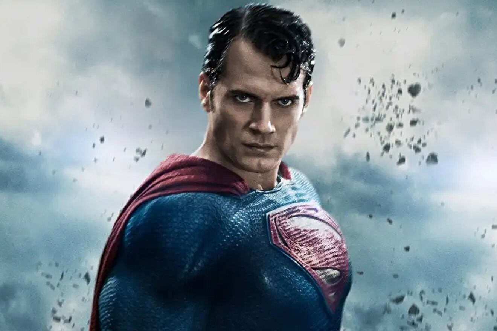

Batamn

Bruce Waye
Batman
Born as a normal humanbeinng , mum dad died at 8 years of age and from that day onwards
he promised himself that he will make sure that every criminal in gotham city will pay for their
deeds. Why he is better tony stark well he is deciplined,he is genious and he is the best dectective in
town. he knows 230 differnt level of hand to hand combat as well as 23 different meditation techniques
he also have leadership qualities and a will that can not be shakened no matter what
feat
- Defeted Superman who is semi god
- scared the death (death is entity in dc she take the life)
Superman
Clark Kent
Superman
He is an alien from krypton , Born with godly ablities like fly , heat vision, super strength, x rey vision,
he is tho only one ever known to fly so close to sun and also went inside the sun and became more powerful,
superman has peaceful mind while thor is all about war and creating havoc, superman can defeat thor with his insane
stregth heat vision
feat
- Defeted the doomsday with the single punch
- Defeted the whole rogue justice leauge from alternate realilty on his own